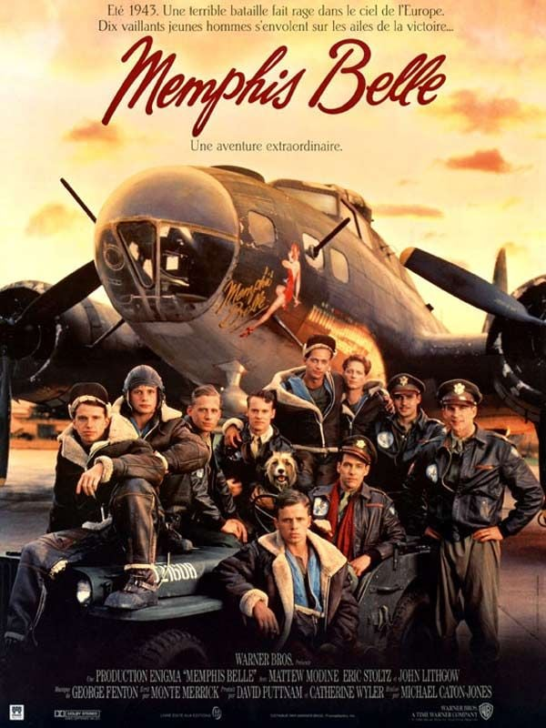

Documentaires
Le premier documentaire sur le Memphis Belle a été réalisé par William Wyler en 1944. Il contient de véritables images tournées pendant les missions. Ce film fut l’un des premiers du genre à montrer la réalité du combat aérien.
Films de fiction inspirés du bombardier
En 1990, un film hollywoodien intitulé "Memphis Belle" est sorti, reprenant l’histoire de la mission finale. Bien que basé sur des faits réels, il prend plusieurs libertés scénaristiques pour renforcer la tension dramatique.
Analyse des différences entre fiction et réalité
La version cinématographique exagère certains événements, modifie des personnages, et dramatise les conflits internes. Cela a pour but de toucher un plus large public, au détriment de la stricte fidélité historique.
← Retour au sommaire